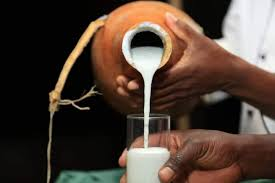

MURSIK TAMU

The following is a recipe to prepare some delicious traditional milk.
The recipe is easy to follow and does not require too many ingredients.
The propotions can be doubled or tripled according to their availability.
Ingredients
- 2 liters of milk
- 1/2 cup of sour milk/maziwa lala
- Cooking stick or something to stir with
Steps
- Boil the milk in a pot
- When the milk has boiled, turn the heat off and let it cool.
- while it is cooling make sure to keep stirring to avoid forming a creamy fill at the top.
- When the milk has cooled, add the sour milk and stir well.
- Stir until it looks well dissolved
- Pour the mixture into a clean bottle or container and let it sit in a cool and dry place for 3 days untouched and undisturbed